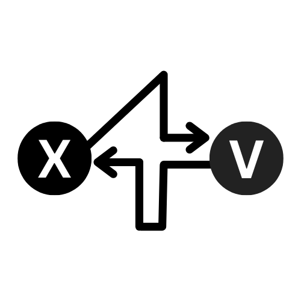

<nav class="x4v-menu">
  <a href="index.html" id="logo-link" style="float:left;margin-left:1em;"></a>
  <a href="index.html">Guide</a>
  <a href="post.html">Post Generator</a>
  <a href="client.html">Client Feed</a>
  <button id="darkmode-toggle">🌙</button>
  <button id="signin-btn">Sign in with nos2x</button>
  <button id="signout-btn" style="display:none;">Sign out</button>
  <span id="signin-status"></span>
</nav> 
